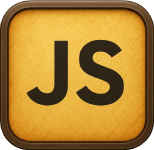
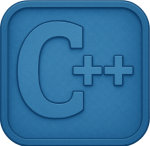

×
I use C++ to build fast, real-time logic and systems where performance matters.
Projects:
- Built small real-time systems to test game mechanics and frame-based logic.
- Implemented core data structures and memory-safe patterns for performance.
- Prototyped entity update loops and collision logic in a simple engine setup.
- Experimented with low-level control over allocation and object lifetime.
- Created small simulation demos focused on speed and predictable behavior.
×
I use JavaScript to build interactive front-end features and small tools, focusing on clean UI and fast feedback.
Projects:
- Built small web apps with interactive UI elements and responsive layouts.
- Worked with APIs to pull data and display it in a clean, simple interface.
- Created lightweight tools for testing ideas quickly in the browser.
- Used modern JavaScript features to simplify logic and organize code.
- Experimented with animations, event handling, and real-time updates.
×
I use Python for data work, machine learning projects, and quick prototypes.
Projects:
- Built data pipelines for collecting, cleaning, and shaping datasets.
- Implemented machine learning models and ran tests to compare results.
- Created scripts to automate tasks like data extraction and processing.
- Worked with popular libraries such as NumPy, pandas, and scikit-learn.
- Prototyped ideas quickly using notebooks and small Python modules.
×
I use Java to build structured projects with clear architecture, mainly for games and backend logic.
Projects:
- Built a full maze game using MVC with clean separation of logic and view.
- Implemented design patterns like Strategy, Factory, Builder, and Facade.
- Created core systems for movement, collisions, and game updates.
- Worked with Java Swing to render graphics and handle user input.
- Focused on project structure, clean code, and reusable components.